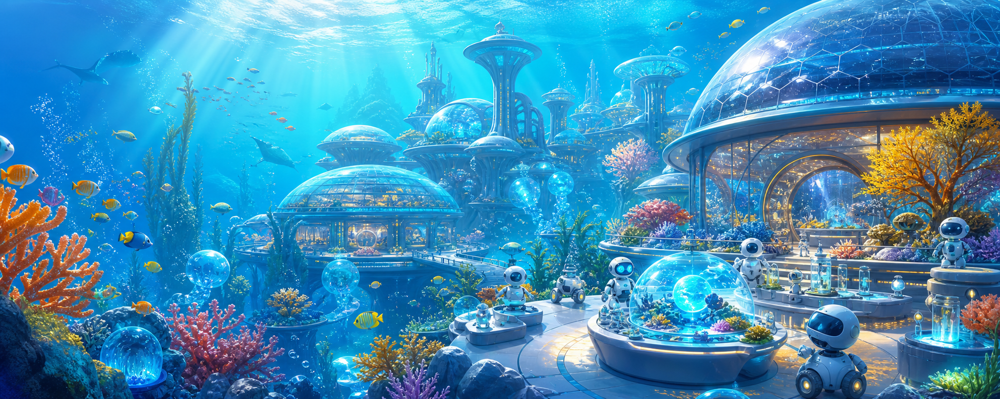

| 決めること | 選択肢 |
|---|---|
| 場所 | 海底都市 ／ 月面基地 ／ 未来の商店街 |
| イベント | 科学祭 ／ 音楽祭 ／ スポーツ祭 |
| 雰囲気 | わくわくする ／ 神秘的 ／ 落ち着く |
idea.mdassets/hero.pngindex.html + style.css + script.js$imagegen 高校の科学祭のイベント画像を作成、舞台は海底都市、雰囲気はわくわくする、Webサイト上部用の横長画像、画像内に文字は入れない、現在のワークスペースのフォルダに保存する。

| 分けて考える | AIへの問い |
|---|---|
| 見える事実 | 画像から確実に分かることは？ |
| 推測 | 想像で補っていることは？ |
| 改善 | 高校生向けに直せることは？ |
| 画像説明 | 見えない人にもどう伝える？ |
この画像 から「イベントが楽しい」「参加者がワクワクしている」という雰囲気が伝わるか確認してください。
はい、どちらの雰囲気も概ね伝わります。
- 「ワクワクしている」：ロボット、透明ディスプレイ、海底都市、展示を指差して会話する生徒から、好奇心や未来感が伝わります。
- 「イベントが楽しい」：複数の展示や参加者が描かれており、科学祭の体験型イベントらしさがあります。
一方で、全体の青い色調と落ち着いた表情により、「楽しい」というより「美しく知的で幻想的」な印象がやや強めです。楽しさをさらに強調するなら、笑顔や驚いた表情、手を挙げる・身を乗り出すなど、より動きのある参加者を増やすと効果的です。
idea.mdと画像を使い、高校生向けのイベント告知ページを作ってください。
彼女は少し笑って、
「よかったね」と言った。
AIは未来を決めるものではなく、
アイデアを何度でも
試作品にしてくれる相棒